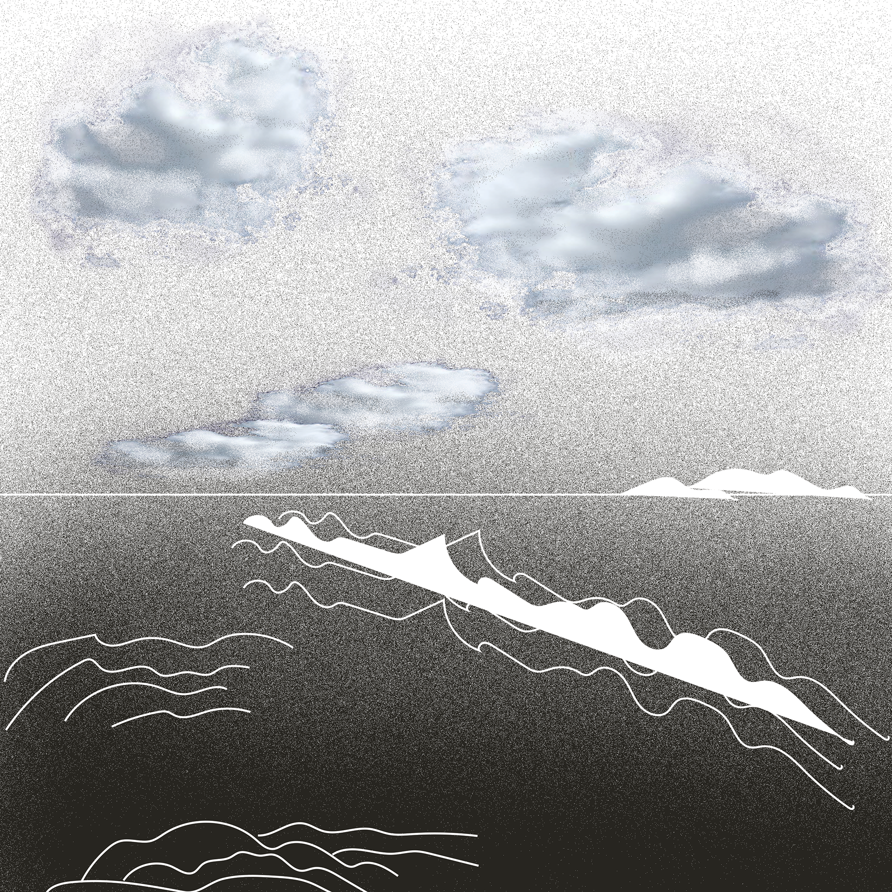
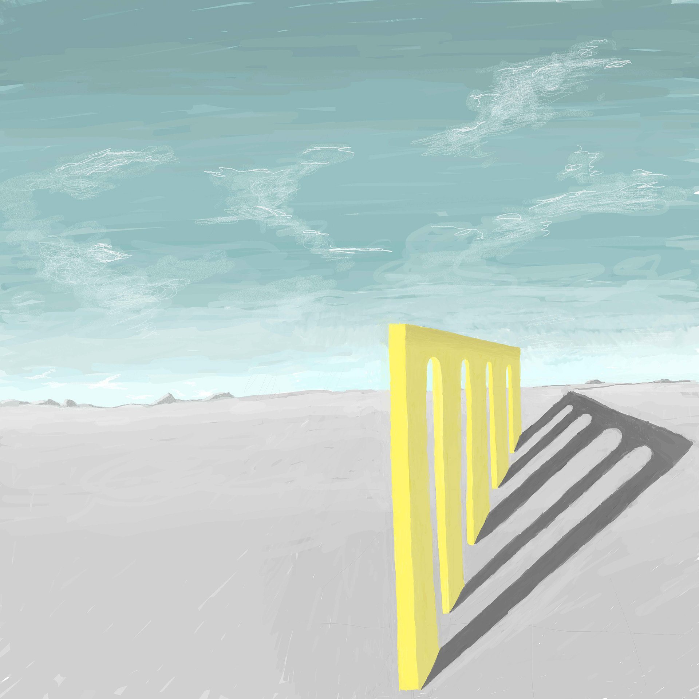
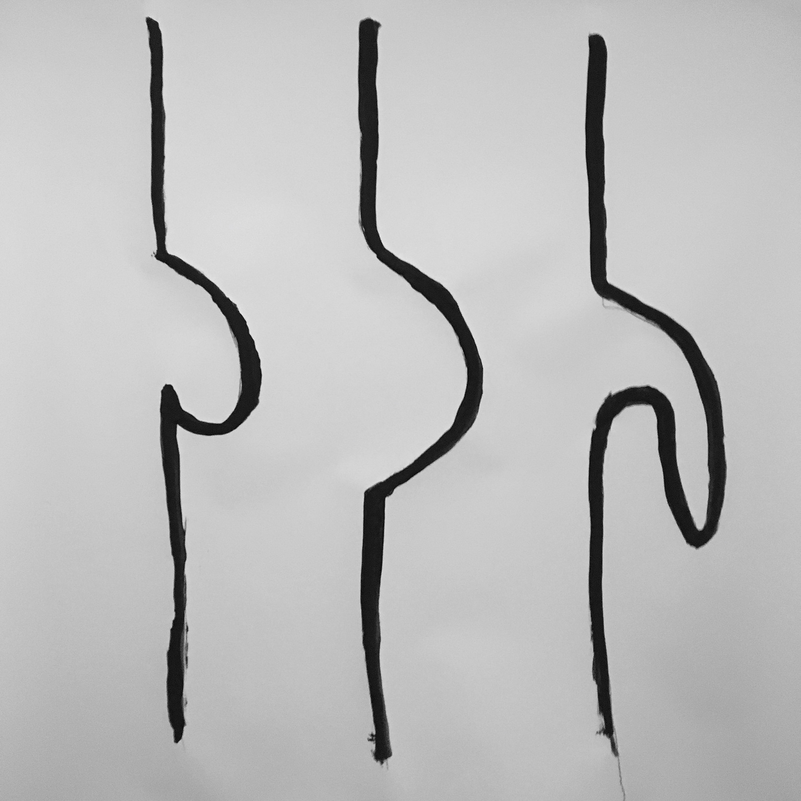
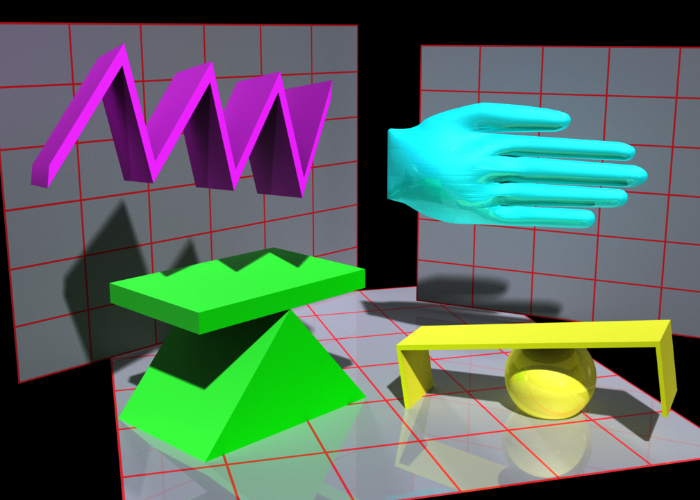
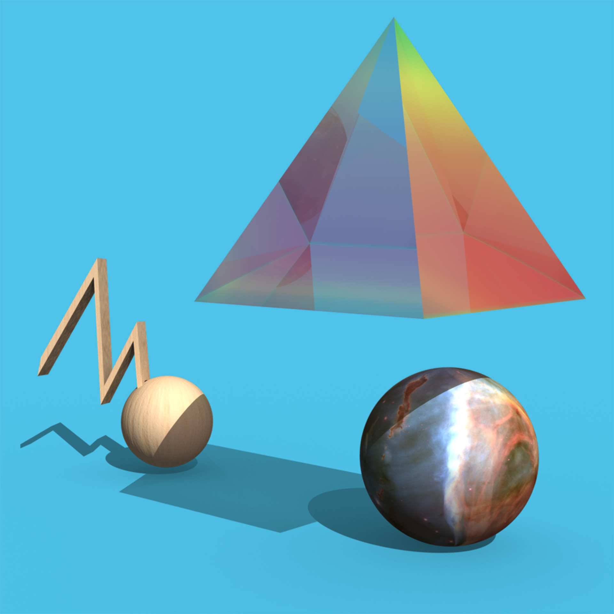
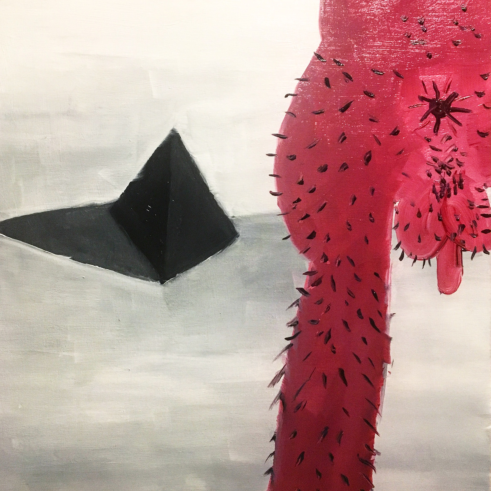
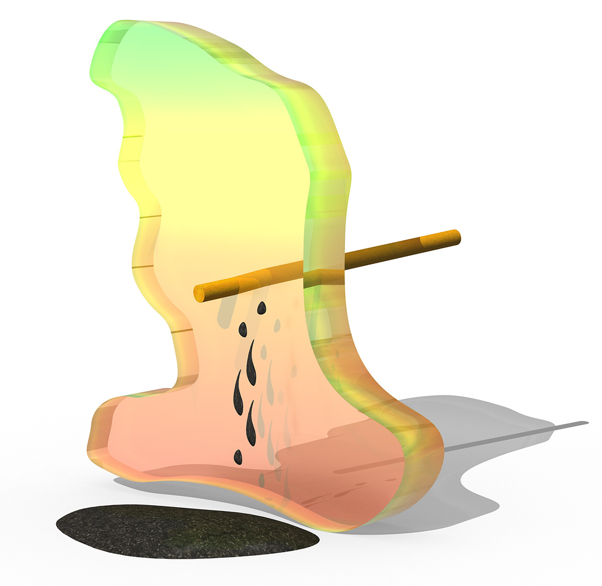

Clouds, 2022
Dithered landscape of ocean and horizon; collage of found images and original vector graphics. 28 × 28 in.
Exhibited in a solo presentation at Anotheroom, Tribeca, New York, 2022.
Intermedia Artist
This selection brings together works made across digital rendering, digital painting, oil painting, collage, and ink. Across media, the works continue my interest in constructed languages, symbolic systems, embodiment, and speculative forms.

Dithered landscape of ocean and horizon; collage of found images and original vector graphics. 28 × 28 in.
Exhibited in a solo presentation at Anotheroom, Tribeca, New York, 2022.

Digital painting. 4 × 4 in.

Sumi ink on paper. 36 × 36 in.

3D digital rendering of hieroglyphic constructed language. 12 × 8 in.

3D digital rendering of hieroglyphic constructed language. 28 × 28 in.
Exhibited in a solo presentation at Anotheroom, Tribeca, New York, 2022.

Oil on wood panel. 12 × 12 in.

Figure being impaled; wooden dowel while bleeding granite. 28 × 28 in.